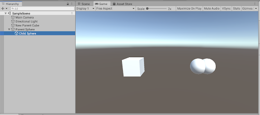
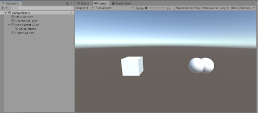
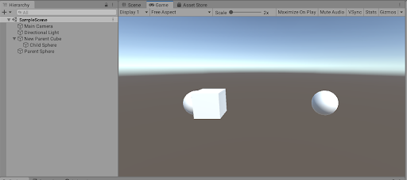

Parameters
| parent | The parent Transform to use. | |
| worldPositionStays | If true, the parent-relative position, scale and rotation are modified such that the object keeps the same world space position, rotation and scale as before. |
Description 描述
Set the parent of the transform.
This method is the same as the parent property except that it also lets the Transform keep its local orientation rather than its global orientation.
This means for example, if the GameObject was previously next to its parent, setting worldPositionStays to false will move the GameObject to be positioned next to its new parent in the same way.
The default value of worldPositionStays argument is true.
The image below shows a child GameObject in its original position:

Here’s how it looks after calling SetParent with worldPositionStays set to true:

Here’s how it looks after calling SetParent with worldPositionStays set to false:

Notice how the Child Sphere is in the same position but now relative to the New Parent Cube.
using UnityEngine;
public class ExampleClass : MonoBehaviour { public GameObject child;
public Transform parent;
//Invoked when a button is clicked. public void Example(Transform newParent) { // Sets "newParent" as the new parent of the child GameObject. child.transform.SetParent(newParent);
// Same as above, except worldPositionStays set to false // makes the child keep its local orientation rather than // its global orientation. child.transform.SetParent(newParent, false);
// Setting the parent to ‘null’ unparents the GameObject // and turns child into a top-level object in the hierarchy child.transform.SetParent(null); } }